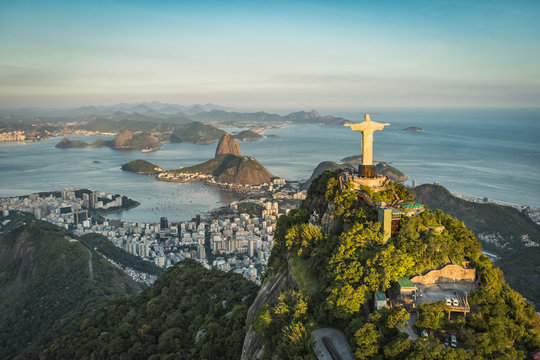
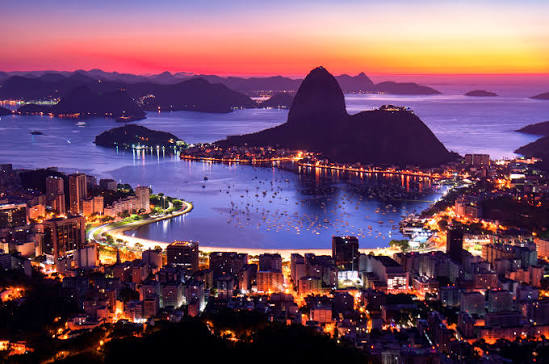
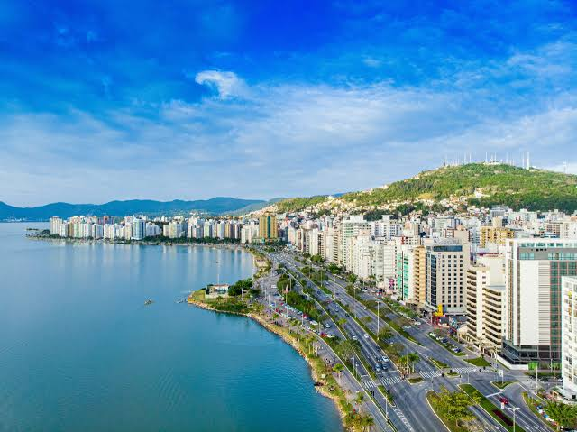

Brasil es el país más grande de América del Sur y uno de los destinos turísticos más importantes del mundo.
Es conocido por sus playas, paisajes naturales, cultura y ciudades. Su capital es Brasilia.

Brasil tiene muchos lugares interesantes para conocer:
| Lugar | Actividad | Dificultad |
|---|---|---|
| Río de Janeiro | Visitar el Cristo Redentor | Baja |
| Florianópolis | Visitar las playas | Baja |
| Amazonas | Excursiones por la selva | Media |
| Salvador de Bahía | Conocer la ciudad | Baja |


Podés encontrar más información sobre Brasil en los siguientes sitios:
Buscar información sobre BrasilBrasil es un destino ideal para quienes disfrutan de la naturaleza, las playas y la cultura.